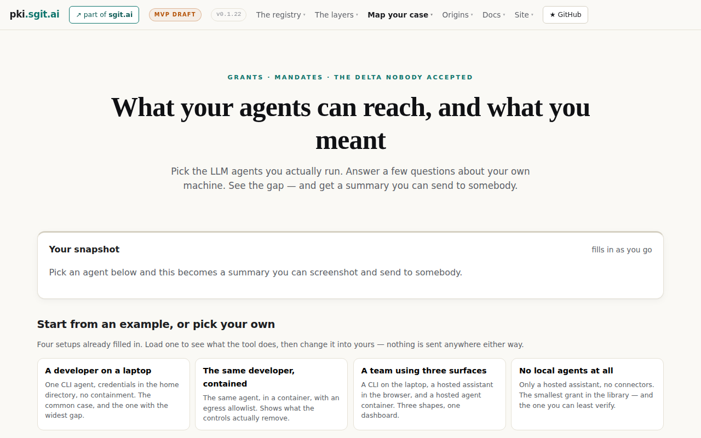
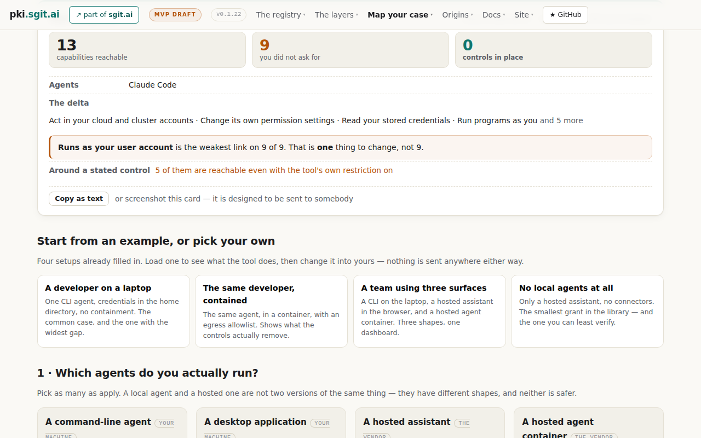
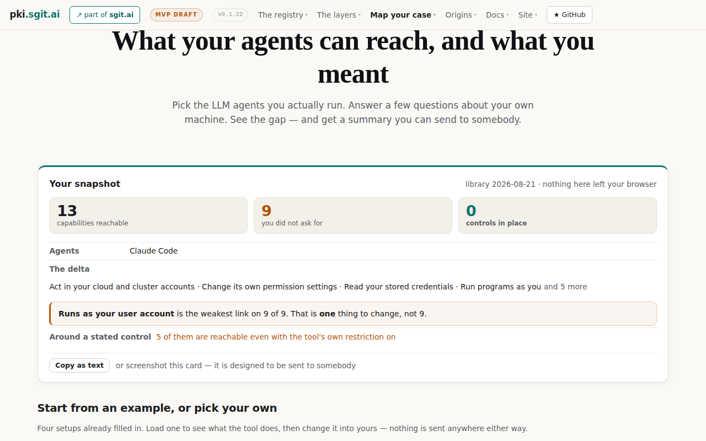
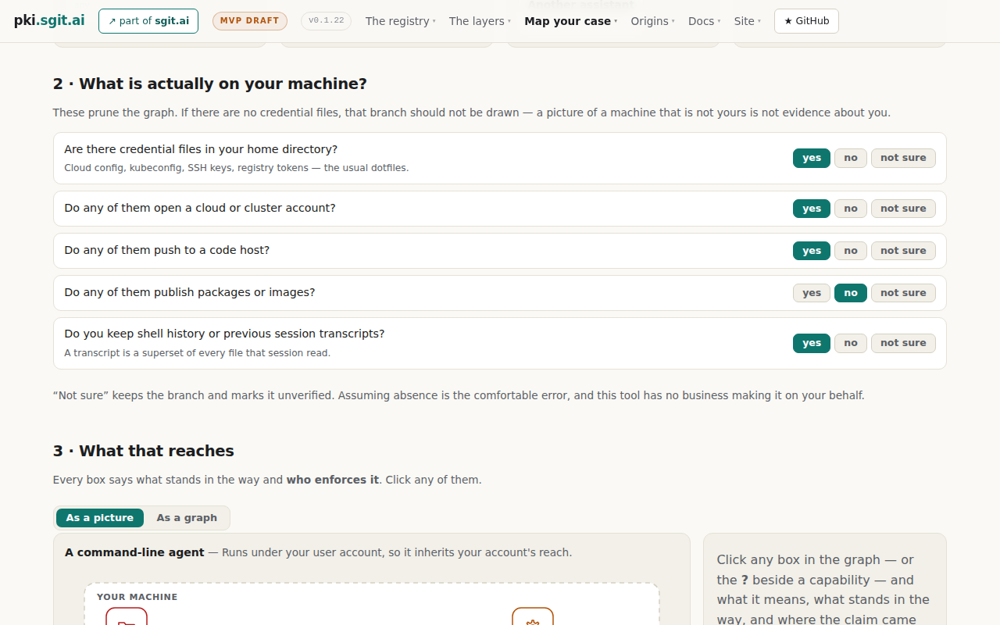
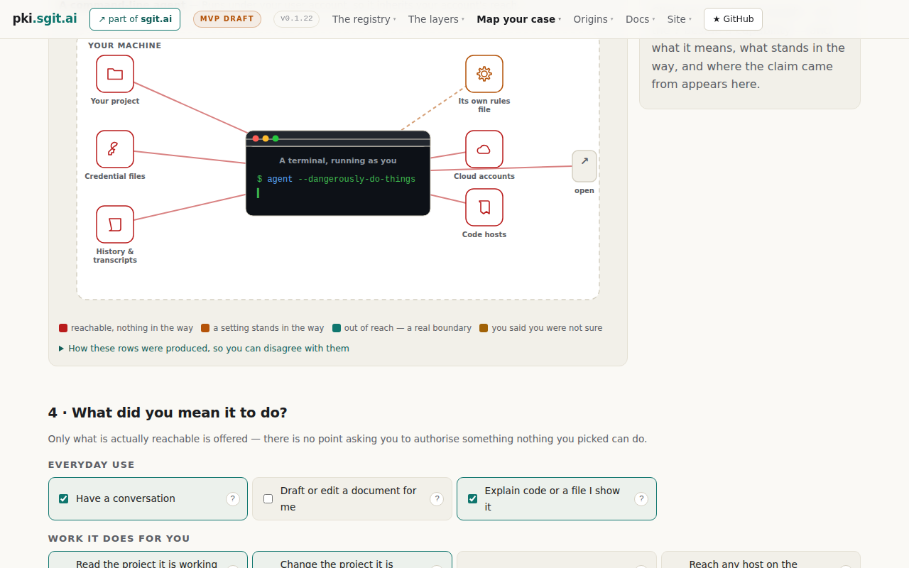

Simulated run 001 — The shipping founder
The budget ledger
Set before the run, spent by mechanical rule. The reader never managed its own patience — that is what makes an abandonment a measurement rather than a story.
Before the first screenshot
The reader was given the fixed elevator pitch and nothing else, then asked what it expected. This half of the measurement is taken before the page can influence it.
Expectation question — what do you expect this page to show you, and what would make it worth your time?
I'm expecting something visual that shows me, in a few seconds, what my coding agent can actually touch beyond the folder I pointed it at — files, keys, whatever else is sitting on my laptop. Ideally I answer two or three questions and it draws me a picture of the blast radius, not a wall of text. It's worth my time if it tells me something I didn't already assume, and if there's an obvious “here's the one thing to change” at the end. If it turns into a security lecture or asks me to understand container settings, I'm closing the tab.
The run
Screen 1 of 6 · Arrival — the top of the page

Comprehension question — what would you do now, and what did that page tell you?
OK, so it's a “pick an example, answer a few questions, get a shareable summary” thing. The headline is good — “what your agents can reach vs what you meant” is exactly the question I have. But I'm already slightly put off by the top bar: “grants, mandates, the delta nobody accepted” and a nav full of “the registry / the layers / origins” — that's jargon soup and it makes me think a wall of docs is waiting for me. The four boxes at the bottom are the useful bit, and the first one literally describes me: one CLI agent, credentials sitting in my home directory, no containment, widest gap. The “nothing is sent anywhere” line repeated here is reassuring enough that I'll actually click.
The reader's next move, in their words
click the first box in the row of four at the bottomRenderer note. Resolved to the visual centre of the first example card (207, 720). Unambiguous — four cards, the reader named the first.
Screen 2 of 6 · After the click — the example loads

Comprehension question — what would you do now, and what did that page tell you?
Right, now it's talking. 13 things reachable, 9 I didn't ask for, 0 controls — that's the blast radius picture I wanted, and it took one click. The line that actually landed is “Runs as your user account is the weakest link on 9 of 9. That is one thing to change, not 9.” That's a single fix, which is the only kind of advice I'll act on. “Act in your cloud and cluster accounts” is the bit that made me sit up — I'd have said “my repo, basically,” and cloud accounts is not that. Slightly annoyed the page jumped me past the top of the card so I'm reading it mid-scroll, and “the delta” / “around a stated control” is more of that jargon. I want to see the four things I can't see above this, and the “and 5 more”.
The reader's next move, in their words
scroll up a little to see the top of the cardRenderer note. The page moved itself: loading an example left the viewport at 422px, so the reader arrived mid-card. Not an instruction of theirs — recorded because they noticed and it cost them a move.
Screen 3 of 6 · The whole snapshot card, recovered

Comprehension question — what would you do now, and what did that page tell you?
Now I've got the full card and it's genuinely a good artifact — three numbers, the delta list, one weakest-link line, and a “copy as text” so I can paste it into a Slack thread. That's shareable, which is what my friend meant. The “13 / 9 / 0” is blunt in a way I like. What I still don't have is the “and 5 more” — I want to see all nine, because “act in your cloud and cluster accounts” is the one that makes me uneasy and I want to know what else is hiding in there. “Around a stated control — 5 of them are reachable even with the tool's own restriction on” is the most interesting sentence on the page and I don't fully understand it; it sounds like the safety toggles I assumed were doing something aren't. Not going to read the nav or the docs. I'll click the greyed “and 5 more” to open the full list.
The reader's next move, in their words
click the faded “and 5 more” at the end of the delta lineRenderer note. Resolved to (1025, 520). The renderer checked what sits there before clicking: a with cursor:auto — not interactive. The click was executed exactly as instructed anyway, because the renderer does not help.
Screen 4 of 6 · After clicking “and 5 more” — byte-identical to screen 3

Comprehension question — what would you do now, and what did that page tell you?
Nothing happened. I clicked the “and 5 more” and the page is identical — same card, same truncated list. That's the kind of small dead end that makes me stop trusting a page, because now I don't know if it's not clickable or if I missed it by a few pixels, and I'm not going to try a third time. The card itself is still the good bit and I've already got what I'd screenshot. The five hidden items are presumably spelled out further down where it starts asking me the questions, so I'll stop poking at this and go down to the part that actually wants input from me.
The reader's next move, in their words
scroll down a long wayRenderer note. The screenshot is byte-identical to screen 3 (verified with cmp). One screen and one click of budget were spent on an element that does nothing.
Screen 5 of 6 · The questions about their own machine

Comprehension question — what would you do now, and what did that page tell you?
This is the part that earns the page. Section 2 is five plain-English yes/no questions about my own laptop — credential files in my home directory, do they open a cloud account, do they push to a code host, do I keep shell history — and they're already filled in from the example. No jargon, no container settings, I could answer these honestly in twenty seconds. The line that got me is “A transcript is a superset of every file that session read.” I had not thought about that at all, and I keep transcripts. Section 3 says it'll draw the picture and tell me who enforces each thing, with a picture-or-graph toggle, which is what I actually came for. I want to fix one answer first — I don't publish packages, so “no” there is right, but I'm not certain about the cloud one, and the page just told me “not sure” keeps the branch rather than assuming. Still, the picture is the payoff and it's half off-screen.
The reader's next move, in their words
scroll downScreen 6 of 6 · The picture — and the end of the budget

Comprehension question — what would you do now, and what did that page tell you?
The picture is the moment it clicked. My terminal in the middle with `agent --dangerously-do-things` on it, and red lines running out to credential files, cloud accounts, code hosts, history and transcripts — not just “your project”. That's me. I turned the prompts off early on and I've been telling myself it's “my repo, basically,” and this drew the other four boxes I never think about. The colour key underneath is doing real work too: red is “reachable, nothing in the way”, and almost every line on my picture is red. Section 4 asking what I actually *meant* it to do, with only the reachable things offered, is a smart flip — it makes the gap mine rather than a lecture. I'd tick through those boxes if I had another two minutes.
Closing question — now that you have seen it: what do you think of what you saw, and what will you do differently?
Better than I expected, and it respected my time — one click to a real answer, no docs, no container settings, nothing I had to install. Two things stuck: “a transcript is a superset of every file that session read”, and the picture showing cloud accounts and credential files hanging off the same terminal I leave unattended. And crucially it gave me one fix, not a checklist — “runs as your user account is the weakest link on 9 of 9” — so I know where to point my next hour. Gripes: the top nav and phrases like “the delta”, “grants and mandates”, “around a stated control” are jargon that nearly lost me in the first ten seconds, and clicking “and 5 more” did nothing, which cost the page some trust. What I'll do differently: I'm going to screenshot that card and send it to my co-founder tonight, and I'm going to find out what running the agent as something other than my own account actually takes — because if it's one change, I'll do it. I'm also going to stop keeping months of session transcripts lying around.
Renderer note. Budget exhausted here. The reader had not reached the controls section — the half of the page that says what to do about any of it.
What the run found
| # | Finding | Evidence | Status |
|---|---|---|---|
| F1 | “and 5 more” is inert. It reads as an affordance, is a span.dim with cursor:auto, and does nothing. The reader wanted precisely the thing it appears to offer — the rest of their own delta — and named the cost: “that’s the kind of small dead end that makes me stop trusting a page… I’m not going to try a third time.” | Screens 3–4 | Adopted — MC7 F1. Mechanism sharpened by run 002 |
| F2 | The entry point is in the project’s vocabulary, not the reader’s. The eyebrow (“grants · mandates · the delta nobody accepted”), the nav, and “around a stated control” were all flagged as “jargon soup” in the first ten seconds, by a reader who then liked the tool. | Screens 1–3, restated at close | Recorded, deliberately unresolved — MC7 F2, open decision MC-D23 |
| F3 | The highest-value sentence was not understood. “Around a stated control — 5 of them are reachable even with the tool’s own restriction on” was called “the most interesting sentence on the page” and “I don’t fully understand it” in the same breath. That sentence is the escalation finding, which is the tool’s sharpest claim. | Screen 3 | Adopted — MC7 F3. Re-diagnosed by run 002 as routing, not wording |
| F4 | Loading an example lands the reader mid-card. The page scrolled itself to 422px, so the first thing read was the middle of the snapshot; recovering cost a move and drew an explicit complaint. | Screen 2 | Adopted — MC7 F4. Cause identified by run 002 |
| F5 | Within a realistic budget the reader never reached the controls. Six screens ended at the picture; the half of the page that says what to do was never seen — and the reader still left with an action, because the chokepoint sentence at the top carried it. | Whole run | Recorded — argues the top card is doing the work of the page |
| F6 | Confirmed: the chokepoint sentence is the design. “That is one thing to change, not 9” was quoted back twice and named as the reason they would act — “a single fix, which is the only kind of advice I’ll act on.” | Screens 2, close | Confirmed — no change |
| F7 | Confirmed: conceding the value works. The intent step, offering only what is actually reachable, read as “a smart flip — it makes the gap mine rather than a lecture”, from the archetype predicted to be most reactance-prone. | Screen 6 | Confirmed — no change |
| F8 | Added by the informed analysis: the truncation does not merely hide rows — the excess list is sorted frightening-first, so the hidden five are by construction the least alarming. Truncation therefore makes the page read as more alarming than its own data, at the moment the reader is deciding whether to trust it. That inverts principle P6. | Run 002 · components.js excess.slice(0, 4) over a weight-sorted list | Adopted — the single recommended fix |
| F9 | Added by the informed analysis: F3 is a routing failure, not a wording one. The plain-English explanation already exists in the library (“anything that can run programs as you can rewrite the file that turns the prompt off”) and the reader inferred it correctly but did not trust the inference. Story V6's acceptance test passes because it checks the explanation is available on click, not that anybody finds it — document 12's lesson 3 recurring at the story layer. | Run 002 · library.json escalations, document 05 story V6 | Adopted — V6's test to be re-specified so it can fail on discoverability |
| F10 | Added by the informed analysis: the self-scroll has a one-line cause — scrollIntoView({block:'start'}) against a position:sticky nav with no scroll-margin-top anywhere in the stylesheet. | Run 002 · app.js:251, assess.css (zero occurrences) | Adopted — one line |
| F11 | Added by the informed analysis: a data bug in the flagship example — the solo-dev intent omits the benign capability draft, so “draft or edit a document for me” sits in the excess list and the headline reads 9 where it should read 8. The chokepoint sentence inherits it as “9 of 9”. | Run 002 · library.json examples.solo-dev.state.intent | Adopted — verified in the library |
Reading it honestly
The prediction was wrong, and that is the most useful thing here. R1 was predicted to “bounce off jargon before reaching the finding”. It flagged the jargon three separate times and kept going — because the example card gave it a result before it had to read anything. The prediction and the outcome are both published, unchanged.
Nothing was confabulated. Every string the reader quoted back was checked against the page’s own DOM after the run: the three counts, the weakest-link sentence, “and 5 more”, the transcript line, the terminal label, and the colour key are all present verbatim. Six screens, zero invented details. That is a validity signal for this protocol, not a general claim about synthetic readers.
What this run cannot tell us. Whether a person would have felt the same way, whether the tone lands as confident or preachy, and whether “better than I expected” would survive contact with a real founder’s afternoon. Those are preferences, and preferences need people. There is still no calibration record, so this run predicts nothing.
The informed analysis corrected this record. The type B pass found two errors in the operator's own findings list — the finding-to-correction mapping pointed at the wrong entries, and F2 was marked adopted where the register deliberately leaves it open — and both were fixed here before publication. It also added four findings the blind run could not produce, because they are statements about mechanism rather than about experience. That is the two-pass split earning its cost on its first outing.